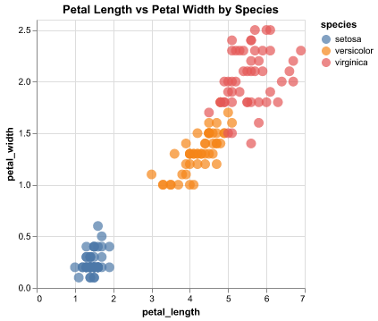
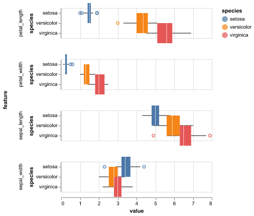
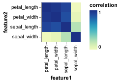
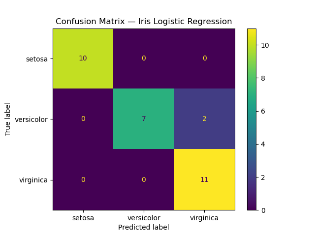

| sepal_length | sepal_width | petal_length | petal_width | |
|---|---|---|---|---|
| count | 149.000000 | 149.000000 | 149.000000 | 149.000000 |
| mean | 5.843624 | 3.059732 | 3.748993 | 1.194631 |
| std | 0.830851 | 0.436342 | 1.767791 | 0.762622 |
| min | 4.300000 | 2.000000 | 1.000000 | 0.100000 |
| 25% | 5.100000 | 2.800000 | 1.600000 | 0.300000 |
| 50% | 5.800000 | 3.000000 | 4.300000 | 1.300000 |
| 75% | 6.400000 | 3.300000 | 5.100000 | 1.800000 |
| max | 7.900000 | 4.400000 | 6.900000 | 2.500000 |
Infering Relationships Between Iris Species and their Characteristics
Summary
The Iris dataset consists of 150 samples of iris flowers, divided evenly into three species: setosa, versicolor, and virginica (50 samples each). Each observation contains four continuous morphological measurements: sepal_length, sepal_width, petal_length, and petal_width. All four features are recorded in centimetres. The dataset is well structured, with no missing values, and includes a balanced class distribution across the three species. A preliminary summary of the numerical features shows that values vary substantially between species; for example, setosa flowers tend to have smaller petal lengths (around 1.4 cm), while virginica flowers exhibit much larger petal dimensions. These clear differences suggest that the dataset is suitable for classification tasks, making it an ideal test case for evaluating machine learning models. In this project, we have developed a classification model using Logistic Regression to predict Iris flower species. based on four measurements: sepal length, sepal width, petal length, and petal width. A baseline DummyClassifier produced a test accuracy of approximately 0.336 across cross-validation folds, confirming that the data is not trivially predictable and that a more sophisticated model is required. Before training the model, all numerical features were scaled using StandardScaler, ensuring that differences in measurement units did not disproportionately influence the classifier. After scaling features and performing hyperparameter tuning weith randomized search, our final Logistic Regression classifier achieved strong performance, with a training accuracy of 0.983 and a test accuracy of 0.933. The confusion matrix indicates that the most predicitons were correct, with only a small number of misclassifications occuring between the versicolor and virginica classes reflectiong their natural feature similarity. Overall, the model demostrated high predicive performance on unseen data, though further refinement or more advnaced model could help reduce raiming classification overlap.
Introduction
A thorough understanding of the geographic distribution and traits of plants is invaluable to the development of sustainable agriculture and biodiversity conservation (Joly et al. (2014)). Thus, as the demand for information and need for biodiversity grow, it becomes even more important that this task is one that can be performed efficiently and accurately (Thyagharajan and Kiruba Raji (2018)). One promising method through which this could be accomplished is machine learning classification.
The goal of this project is to explore how different physical measurements of iris flowers relate to species identity and to build a classification model that can accurately predict species based on these characteristics. The Iris dataset is a well-known benchmark in machine learning because it is clean, balanced, and contains clear biological differences among species. Each flower is described by four continuous measurements—sepal length, sepal width, petal length, and petal width—and belongs to one of three species: setosa, versicolor, or virginica.
Because these measurements reflect real morphological differences, the dataset provides a natural opportunity to study the relationship between flower structure and species classification. It also allows us to evaluate and compare machine learning models in a controlled environment. In this project, we perform exploratory data analysis to understand feature distributions and correlations, then develop a predictive model using Logistic Regression. We also include a DummyClassifier as a baseline to ensure that model performance improvements are meaningful rather than accidental.
Finally, we evaluate the model using cross-validation, hyperparameter tuning, and confusion-matrix diagnostics. This approach allows us to understand both how well the model learns from the training data and how reliably it generalizes to unseen samples. Overall, this project demonstrates the connection between biological measurements and species identity while providing a clear example of building, tuning, and interpreting a supervised classification model.
Methods
Data
The dataset used in this project is the classic Iris flower dataset originally collected by the British statistician and biologist Ronald A. Fisher in 1936 as part of his research on linear discriminant analysis. It is publicly available through the UCI Machine Learning Repository, where it is widely used as a benchmark dataset for classification tasks. Each row in the dataset represents physical measurements of a single iris flower, including four numerical attributes sepal length, sepal width, petal length, and petal width recorded in centimetres. Alongside these measurements, each observation is labelled with one of three species (Iris setosa, Iris versicolor, or Iris virginica), originally identified by botanists through morphological characteristics. This dataset is clean, balanced, and well-suited for evaluating machine learning classification algorithms. Fisher (1936)
Analysis
In this step, we load the Iris dataset from an online source into a pandas DataFrame. We check for missing values to ensure the dataset is complete, view the first and last few rows to get a sense of the data structure, and look at the shape and data types to understand what kind of data we are working with.
Data validation checks
Correct data file format
Correct column names as per schema
No empty observations
Missingness within expected thresholds
Correct data types for each column
No duplicate observations
Values within expected ranges / valid categories
Insights from Data
From the above code cells, we can see:
The dataset has 150 rows and 5 columns.
There are no missing values, so the data is complete.
The dataset contains three species: Setosa, Versicolor, and Virginica.
Petal measurements show the strongest separation between species.
Setosa is clearly distinct, while Versicolor and Virginica overlap somewhat.
Sepal measurements show smaller differences and are less useful for distinguishing species.
Scatter plot
This plot shows how the species are separated based on petal measurements. The three species form distinct clusters, indicating that these two features are good for classification. It also shows that Setosa is well-separated, while Versicolor and Virginica have some overlap.

Boxplots
These plots show the distribution of each feature for different species. By comparing medians and ranges, we see that Setosa generally has smaller petals and sepals, while Virginica has the largest. This helps us understand the differences between species and why some features are better for classification.

Correlation Heatmap
This plot shows how the numeric features are related to each other. We can see that petal length and petal width are highly correlated, while sepal length and sepal width have a weaker correlation. This suggests that petal measurements might be more useful for distinguishing species.

Results & Discussion
In our EDA, we observed in Figure 1 and Figure 2 that though the pedal attributes (length and width) show a higher level of interspecies distinction than the sepal attributes, all features exhibit an adequate amount of spread to be considered useful for our model. Additionally, Figure 3 shows that sepal attributes are indeed correlated with petal attributes, increasing their utility to our model. After finding no conclusive evidence in support of dropping features from our model, we move forward with the full set of features from the dataset.
The next step of the process consists of splitting the data into train and test. In this case a 80-20% split is being considered.
As a precautinary step, it is always beneficial to run the dummy model on the data to get the baseline accuracy. This aids in tuning the true regression model being used for training and prediction so that a balanced train-test score can be achieved.
| fit_time | score_time | test_score | train_score | |
|---|---|---|---|---|
| 0 | 0.000342 | 0.000400 | 0.333333 | 0.336842 |
| 1 | 0.000270 | 0.000259 | 0.333333 | 0.347368 |
| 2 | 0.000302 | 0.000282 | 0.333333 | 0.347368 |
| 3 | 0.000334 | 0.000374 | 0.333333 | 0.347368 |
| 4 | 0.000279 | 0.000253 | 0.347826 | 0.343750 |
As is seen in Table 2, the dummy model is quite ineffective when it comes to prediction in this case. This model predicts the same class each time and our data contains three classes that occur at similar frequencies. Thus, we can conclude that this is insufficient for fitting our data and begin the process of constructing a more complex model.
In order to insert all the columns that require column transformations such as the StandardScaler(), we need to obtain all the feature columns from the dataset
The preprocessor is required and is a good practice before using the pipeline. The preprocessor consists of all the required transformations and the features on which they will be performed. We employ a classification model utilizing Logistic Regresison for this task, as we have a relatively small number of features in our model. This will also allow us to retain a higher level of interpretability in our model.
To optimize the model’s classification capabilities, we employ a randomized hyperparameter search. This will provide insight into what values of the C hyperparameter from logistic regression will perform best in our model.
| param_classifier__C | mean_test_score | std_test_score | |
|---|---|---|---|
| 15 | 14.062606 | 0.983333 | 0.020412 |
| 25 | 2.905520 | 0.975000 | 0.033333 |
| 16 | 3.753517 | 0.975000 | 0.033333 |
| 45 | 248022.028852 | 0.975000 | 0.020412 |
| 37 | 592.208414 | 0.975000 | 0.020412 |
| 35 | 316238.424734 | 0.975000 | 0.020412 |
| 33 | 131.405800 | 0.975000 | 0.020412 |
| 32 | 13702.373949 | 0.975000 | 0.020412 |
| 30 | 140686.472176 | 0.975000 | 0.020412 |
| 28 | 391.728683 | 0.975000 | 0.020412 |
We see that most of our highest-performing models have a C hyperparameter value in the rough range of 1.75 to 3.75, signalling that this is our optimal range. Next, we will test our optimized model on our testing data from our initial train/test data split, allowing us to observe how well our model generalizes to unseen data.
Train accuracy: 0.9831932773109243
Test accuracy: 0.9333333333333333For greater context around these scores, we will plot a confusion matrix.

Achieving a training score of 0.983, it is evident that the model was able to learn the relationships between the four iris measurements. Additionally, the model generalizes to the unseen data quite well, yielding a test score of 0.933. While the discrepancy between the model’s train and test scores elicit some concern around potential overfitting in the model, it is not large enough to overshadow its strong generalization capabilities.
These findings imply that the four measured flower characteristics are strong predictors that could reliably enhance species identification. Future questions could explore whether more complex models could grow accuracy even further or whether certain species pairs remain more difficult to separate due to particular traits. Overall, it appears that this model is well on its way to becoming a strong tool for iris identification.
References
Fisher, R. A. 1936. “Iris.” UCI Machine Learning Repository.
Joly, Alexis, Hervé Goëau, Pierre Bonnet, Vera Bakić, Julien Barbe, Souheil Selmi, Itheri Yahiaoui, Jennifer Carré, Elise Mouysset, and Jean-François et al. Molino. 2014. “Interactive Plant Identification Based on Social Image Data.” Ecological Informatics 23 (September): 22–34. https://doi.org/10.1016/j.ecoinf.2013.07.006.
Thyagharajan, K. K., and I. Kiruba Raji. 2018. “A Review of Visual Descriptors and Classification Techniques Used in Leaf Species Identification.” Archives of Computational Methods in Engineering 26 (4): 933–60. https://doi.org/10.1007/s11831-018-9266-3.